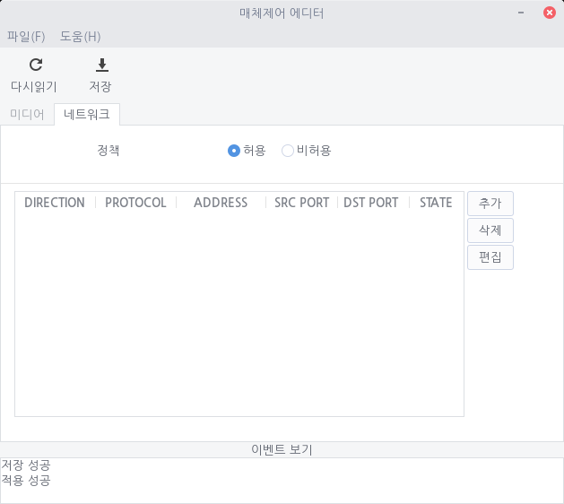
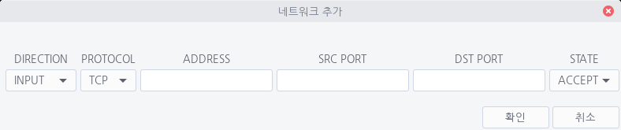

네트워크 정책은 매체제어 편집기의 두 번째 탭에서 적용할 수 있습니다.
정책의 허용/비허용 라디오 버튼을 통해 기본 값을 선택할 수 있습니다. 허용으로 선택시 모든 들어오고 나가는 신호를 허용한다는 의미이며, 비허용으로 선택 시 기본 값은 모든 들어오고 나가는 신호를 허용하는 않는 것입니다. 즉, 비허용으로 선택하면 인터넷을 사용할 수 없게 됩니다.
아래의 ip table을 통해 블랙 리스트, 화이트 리스트를 관리할 수 있습니다. 이러한 특별한 리스트를 추가하기 위해서는 추가 버튼을, 삭제하기 위해서는 삭제버튼을, 이미 있는 목록을 편집하기 위해서는 편집 버튼을 클릭하세요.
네트워크 정책 추가 및 편집
추가 혹은 편집 버튼을 클릭하면 아래와 같은 창이 열립니다.

| DIRECTION | 신호의 방향을 선택할 수 있습니다. 로컬로 들어오는 신호일 경우 [INPUT]을, 로컬에서 외부로 나가는 신호일 경우 [OUTPUT]을, 두 경우 모두 일 때는 [ALL]을 선택해주세요. |
| PROTOCOL | 통신 방식을 선택할 수 있습니다. 종류에 맞춰 [TCP], [UDP], [ICMP] 중 선택해 주세요. |
| ADDRESS | DIRECTION의 경우에 따라 달라집니다. DIRECTION이 [INPUT]인 경우 source ip 주소를, DIRECTION이 OUTPUT일 경우 destination ip를, ALL인 경우는 상대의 ip 주소를 입력해주세요. |
| SRC PORT | source가 이용하는 포트 번호를 의미합니다. |
| DST PORT | 목적지에서 이용하는 포트 번호 입니다. |
| STATE | 상태를 나타냅니다. 화이트 리스트를 구성하려는 경우 [ACCEPT]를, 블랙리스트를 구성하는 경우 [DROP]을 선택해주세요. |
모든 설정을 마치면
확인버튼을 클릭하시고, 최종적으로
저장버튼까지 클릭하셔야 반영됩니다.